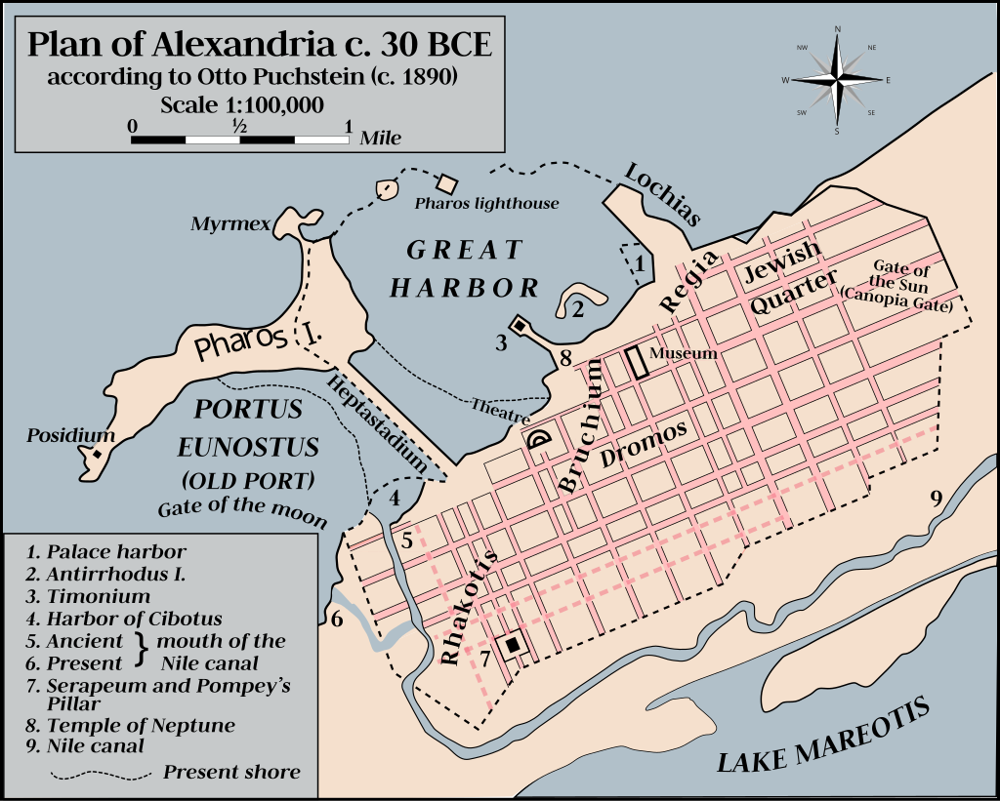

Although Alexander was stubborn and did not respond well to orders from his father, he was open to reasoned debate. He had a calmer side—perceptive, logical, and calculating. He had a great desire for knowledge, a love for philosophy, and was an avid reader.
This is bold This is italicized and This is underlined
